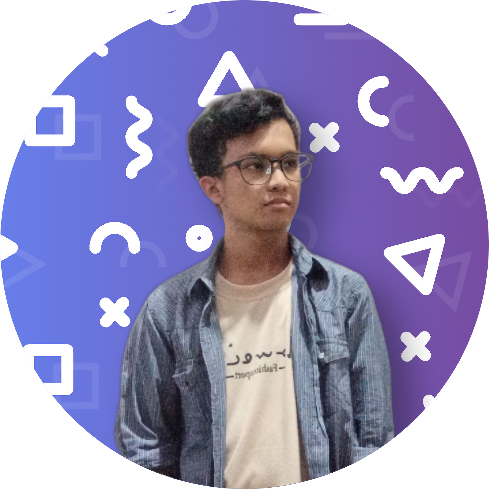
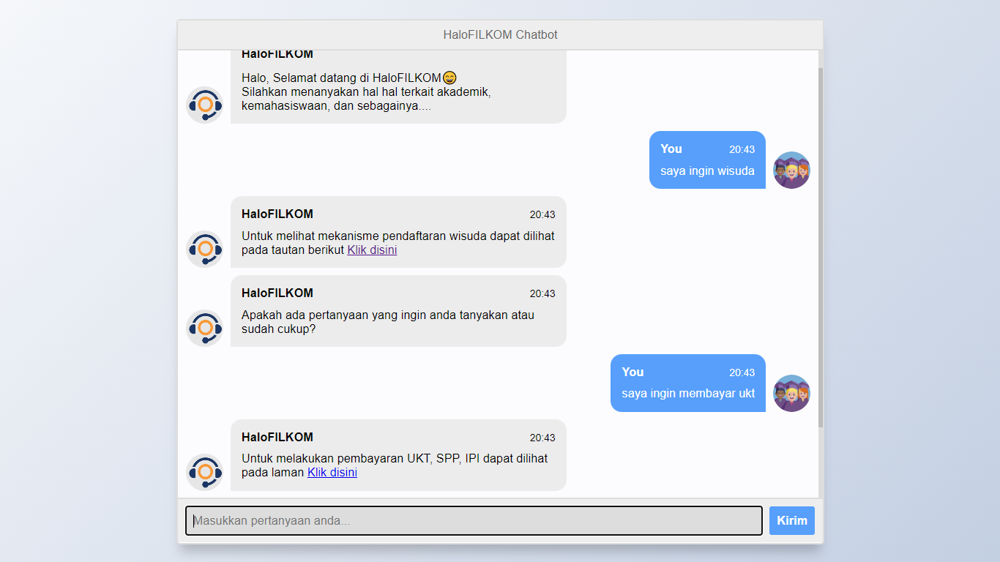
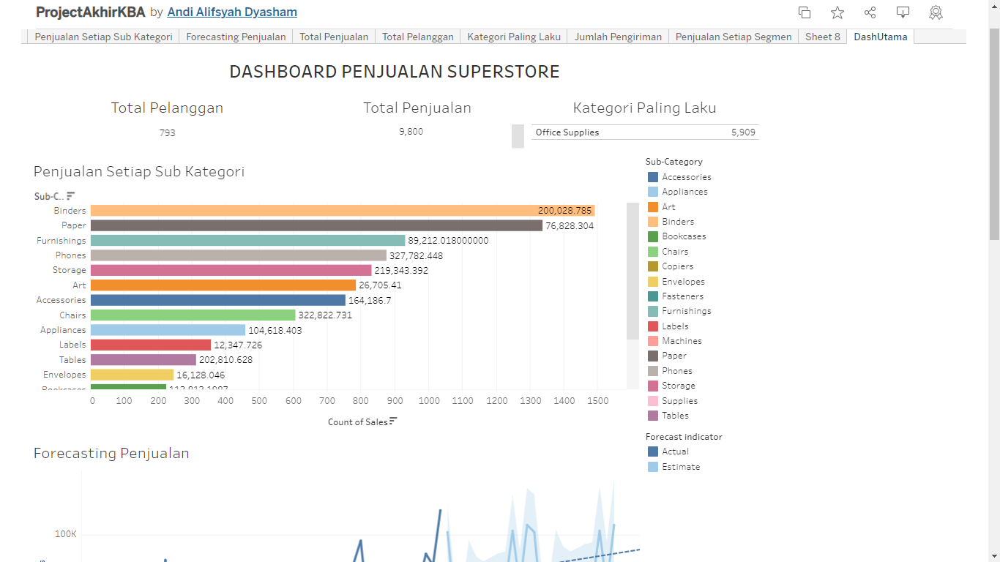
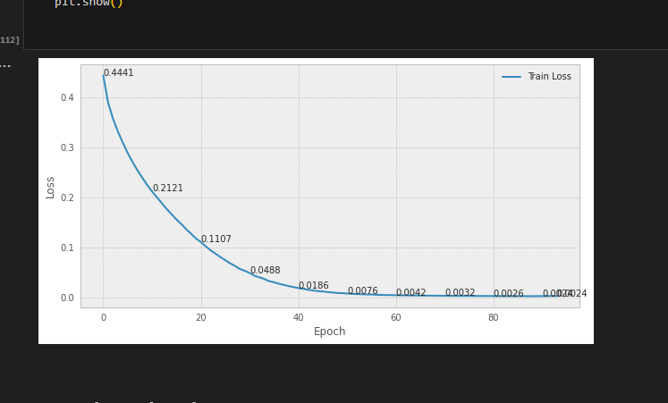
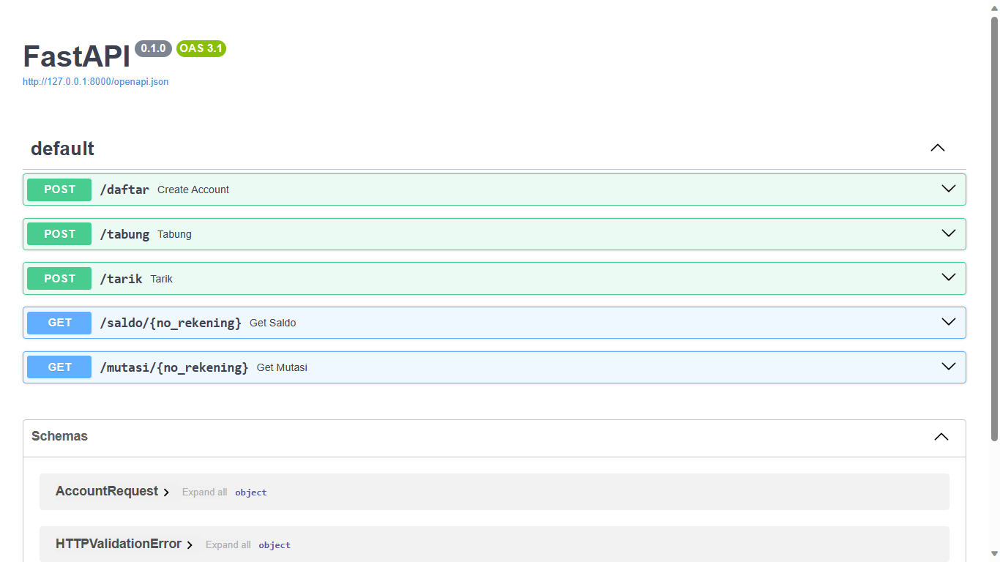
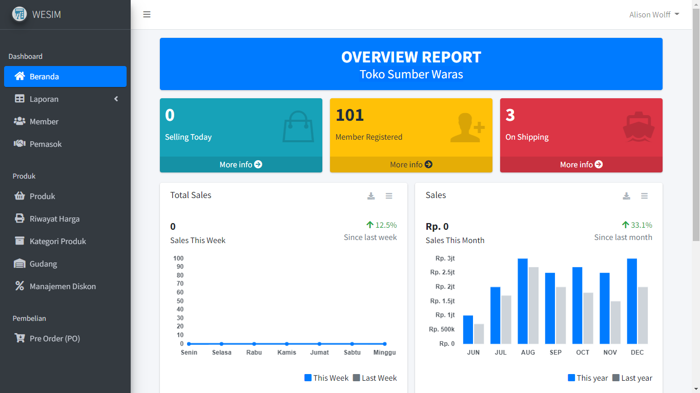

Software Engineer · AI Researcher · Sovereign AI
Engineer with 3+ years in high-scale banking systems. Best Graduate of Universitas Brawijaya (GPA 3.95). Slashed development cycles by 70% through AI automation.
An engineer primarily focused on backend development and artificial intelligence with 3+ years of experience in high-scale banking systems, managing core migrations of 114+ transaction types, and pioneering Sovereign AI solutions.
Contributed to scientific publications in NLP at international conferences. In 2023, achieved the distinction of Best Graduate from the Faculty of Computer Science at Universitas Brawijaya (GPA 3.95), and has received over 15 national and international awards.
"Slashed development cycles by 70% through AI automation and engineered core migrations of 114+ transaction types in high-scale banking infrastructure."
PT. Bank Mandiri, Tbk
Jakarta, Indonesia
CV. SiMi Kita Selesaikan
Kendari, Indonesia
PT. Ihsan Solusi Informatika
Bandung, Indonesia · Contract Remote
PT. Ihsan Solusi Informatika
Bandung, Indonesia · Contract Remote
PACCMANN Academy Indonesia
Jakarta, Indonesia · Remote
PT. Venturo Pro Indonesia
Malang, Indonesia
Fakultas Ilmu Komputer, Universitas Brawijaya
Malang, Indonesia
Techno's Studio
Kendari, Indonesia
Universitas Brawijaya
Computer Science — Intelligent System (NLP)
Universitas Brawijaya
Information System Program
Mathematics and Science
Helping the operations team gain full visibility over hundreds of transactions per day — and prevent SLA breaches before they happen.
Overcoming data scarcity and informal linguistic variations using Parameter-Efficient Fine-Tuning (PEFT) on Large Language Models.
Migration of 114+ legacy endpoints to a distributed Golang microservice architecture, ensuring strict compliance with SNAP-BI standards.


Tableau dashboard for Superstore KPIs with descriptive and predictive analytics including sales forecasting.

RNN-based chatbot for Indonesian Language — achieved 0.00021 loss and 83% BLEU Score.

Bank account CRUD and mutation API built with FastAPI, Docker, and SQLAlchemy ORM.

Point-of-sale web app with cashier, reporting, PDF export, and product management. Built with Laravel + Bootstrap.
Let's connect and discuss opportunities